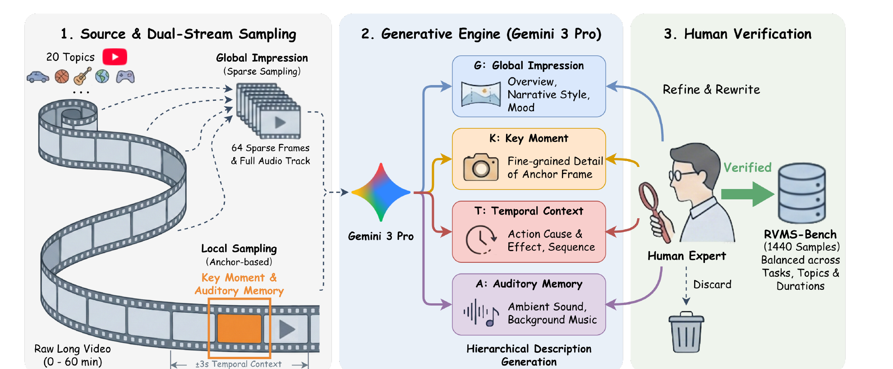

Benchmark · Real-world Video Memory Search · Moment Localization
RVMS-Bench
RVMS-Bench moves video retrieval beyond clean captions and closed candidate pools. A query is reconstructed from partial global, key-moment, temporal, and auditory memories; the system must search the open web for a long video and localize the remembered moment.
Third author with equal contribution; Tao Yu served as project leader. RVMS-Bench and the RACLO agent are reported together in “Beyond Closed-Pool Video Retrieval: A Benchmark and Agent Framework for Real-World Video Search and Moment Localization.”

Long videos, balanced topics, and human-verified memories
Durations are balanced across shorter than 3 minutes, 3–10 minutes, 10–30 minutes, and 30–60 minutes. The task therefore tests both candidate discovery and localization under realistic long-form content.
Four complementary ways a person remembers a video
G · Global Impression
Overall topic, narrative style, mood, and coarse visual identity.
K · Key Moment
A fine-grained anchor scene or distinctive event remembered by the user.
T · Temporal Context
Actions, cause-and-effect relationships, and what happened before or after.
A · Auditory Memory adds speech, background music, ambient sounds, or other acoustic cues that may be more diagnostic than the visible scene.
Dual-stream sampling and expert verification
Source videos are sampled in two ways: sparse global frames plus the full audio track support global and auditory descriptions, while anchor-centered local sampling supports key-moment and temporal-context descriptions. A generative engine proposes hierarchical memories, then human experts refine, verify, or discard them.

Real-world video search
Recover the correct long-form source from the open web. There is no curated candidate list at inference time, so query reasoning, search interaction, and candidate acquisition are all evaluated.
Moment localization
After recovering the source video, identify the frame or temporal neighborhood that matches the key, temporal, and auditory clues while rejecting visually similar distractors.
RVMS-Bench defines the problem; RACLO is the accompanying agent
Keeping the benchmark and method conceptually separate makes the research easier to audit. RVMS-Bench specifies memory inputs, verified targets, duration/topic balance, and the dual retrieval-localization task. RACLO supplies one Recall–Search–Verify solution and can be compared with future systems on the same benchmark.